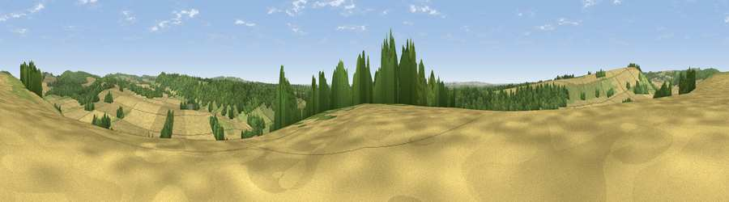

Viewpoint near Chalton
#35939 in England · top 53% of its area beats it · near ChaltonWhere it is
The exact computed spot (SU 73425 14425). Click the marker for map links.
The view, rendered

A 360° render of this exact spot computed from the terrain model, tree cover and land cover — summer colours, afternoon light, calibrated against photographs of famous viewpoints. Real trees, hedges and buildings will differ in detail.
The panorama
Grey silhouette: terrain skyline in each direction (720 bearings, Earth curvature and refraction included). Dashed green: skyline with trees (+15 m) and buildings (+8 m) as obstacles. Blue strip: how far the ground is visible on each bearing.
Where the view opens
Wedge length = distance to the farthest visible ground on that bearing (vegetation-aware). Rings at 10, 25 and 50 km.
What fills the view
41% cropland · 32% woodland · 23% grassland · 1% built-up · 1% water
Angular shares of the visible panorama (visual magnitude), not map area. Landscape diversity 0.52 (0–1 Shannon).
Key numbers
More beautiful places nearby
The staircase of upgrades: each row has a higher view potential than everything closer. Driving times are estimates from straight-line distance, calibrated against real road routing — check an actual route before setting out.
| Place | Direction | Drive | Score |
|---|---|---|---|
| Viewpoint near Horndean | W · 1 km | ~4 min | 54.9 |
| Windmill Hill | NW · 2 km | ~6 min | 74.0 |
| Viewpoint near Buriton | NNW · 6 km | ~13 min | 80.0 |
| Beacon Hill | ENE · 8 km | ~17 min | 85.8 |
| Viewpoint near Upper Bonchurch | SSW · 39 km | ~58 min | 86.4 |
| Chanctonbury Ring | E · 40 km | ~60 min | 87.0 |
| Viewpoint near St. Lawrence | SSW · 42 km | ~61 min | 88.2 |
| Viewpoint near Niton | SSW · 45 km | ~65 min | 89.2 |
50.92462, -0.95669 · source: screening · position refined by local search. Computed location — check access rights before visiting.